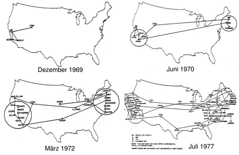
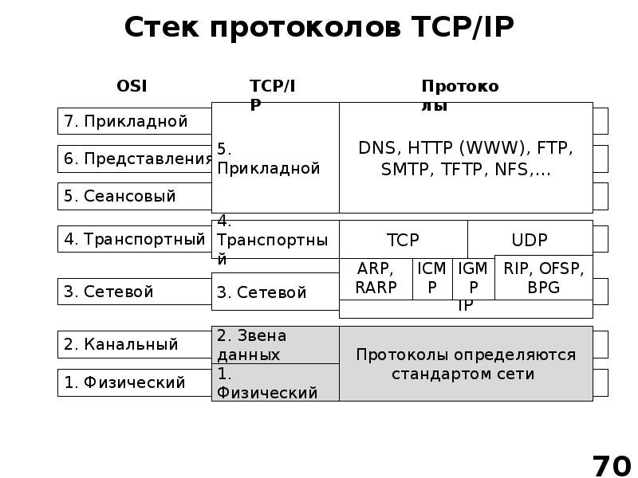
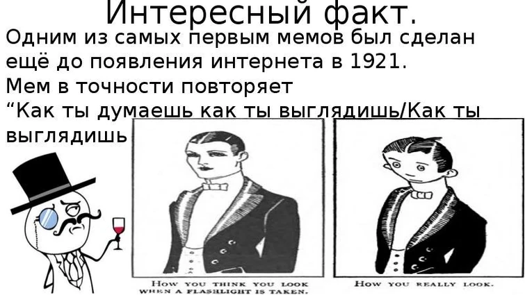

Что такое интернет?
Сейчас вы погрузитесь в волнующую историю Интернета, прослеживая его зарождение и стремительное развитие от первых сетевых протоколов до формирования Всемирной паутины, которая навсегда изменила наш мир.
Если говорить в общем, то интернет — это не просто технология, а настоящая революция, изменившая наше общество, экономику и культуру. Понимание его истоков помогает осознать, как мы пришли к современному состоянию глобальной сети.
ARPANET- это
ARPANET — это первая экспериментальная сеть, созданная в 1960-х годах Министерством обороны США для обмена данными между исследовательскими центрами..
В 1957 году Советский Союз запустил "Спутник-1", что вызвало беспокойство в Соединенных Штатах. В ответ их правительство создало Агентство передовых исследовательских проектов (ARPA), которым было поручено разработать технологии для поддержания военного превосходства. В 1962 году ARPA запустила проект под названием "Сеть с коммутацией пакетов" (ARPANET), который стал предшественником современного Интернета.
TCP/IP-это
TCP/IP — Разработка универсального протокола передачи данных, ставшего основой для развития глобальной сети Интернет.
В 1974 году Винтон Серф и Боб Кан разработали протокол управления передачей (TCP) и протокол межсетевого взаимодействия (IP), которые стали основой для передачи данных в Интернете. Он обеспечивает связь между различными устройствами и сетями, позволяя им обмениваться информацией.
Развитие в 1970-е и 1980-е годы
Развите локальных сетей (LAN)
LAN - это сеть, которая соединяет компьютеры и устройства в ограниченной географической области, такой как дом, офис или учебное заведение.
Развите глобальных сетей (WAN)
WAN — сеть, которая соединяет устройства на больших расстояниях, например, между городами или странами.
Появление первых коммерческих организаций
В 1980-е годы начали появляться первые коммерческие организации, предоставляющие интернет-услуги, что способствовало его распространению среди широкой аудитории.
Влияние на образование и науку
Интернет оказал огромное влияние на образование и науку, предоставив доступ к огромным объемам информации и возможности для удаленного сотрудничества.
WWW - это
WWW (World Wide Web) — это система взаимосвязанных гипертекстовых документов, доступных через интернет. Она была разработана Тимом Бернерс-Ли в 1989 году и стала основой для современного интернета.
В 1989 году Тим Бернерс-Ли, работавший в Европейской организации по ядерным исследованиям (CERN), разработал Всемирную паутину. WWW была системой, которая позволяла пользователям легко получать доступ к информации в Интернете с помощью гипертекстовых ссылок.
Коммерциализация Интернета
Коммерциализация Интернета — это процесс, в ходе которого интернет-услуги и технологии стали доступны для широкой аудитории и начали использоваться в коммерческих целях.
- Рост коммерческих интернет-провайдеров.
- Появление первых интернет-магазинов и онлайн-сервисов.
- Влияние на экономику и бизнес.
Социальные изменения
Интернет стал платформой для общения, обмена информацией и культурного взаимодействия. Появление социальных сетей (Facebook, Twitter) в 2000-х годах изменило способ взаимодействия людей.Огромное количество знаний стало доступно каждому, что способствовало образованию и саморазвитию.
Заключение
Интернет начал свой путь как экспериментальная сеть, но быстро превратился в неотъемлемую часть нашей жизни. Сегодня он продолжает развиваться, открывая новые возможности и ставя перед нами вызовы. Понимание его истории помогает нам лучше осознавать его влияние на будущее.
